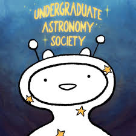
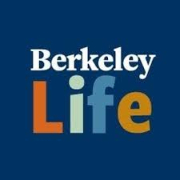
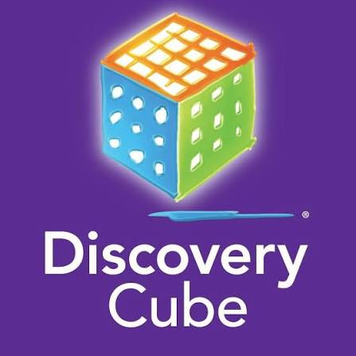
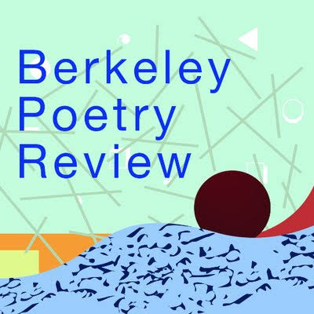
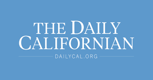
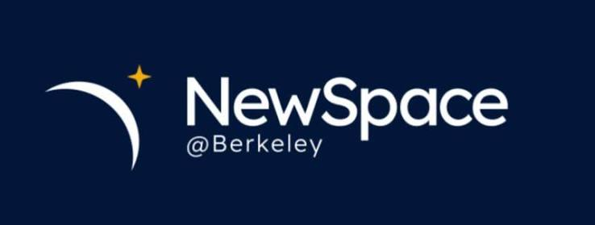

Extracurriculars
A collection of some of the communities and clubs I've been a part of during my time in university.

Undergraduate Astronomy Society
Community Development Officer (2026-present) · Marketing & Website Development Officer (2025-2026) · Telescope Crew (2024-present)
The Undergraduate Astronomy Society has given me the opportunity to combine my interests in astronomy, community building, mentorship, science communication, and learn about website development and HTML.
As Community Development Officer, I manage the Cluster Mentorship Program, which includes four clusters, 15 mentors, and more than 100 participants.
Previously, I served as Marketing and Website Development Officer, where I maintained the club website and created a biweekly newsletter for more than 600 subscribers.
I have also been a member of Telescope Crew, where I was trained to operate Schmidt-Cassegrain, Newtonian, Dobsonian, and UC Berkeley's 17-inch PlaneWave telescope. Bi-monthly, we bring the telescopes out to the main campus plaza and let people who pass by take a look!

UC Berkeley Life
Managing Editor (2025-present)· Student Assitant Writer (2024-2025)
As a Managing Editor for UC Berkeley Student Affairs Communications, I write and interview for the UC Berkeley Life Blog, helping tell stories about the student experience at Berkeley.
I also proofread updates to university websites and communications covering topics such as financial aid, events, housing, and undergraduate and graduate student information.
You can read my published work on my UC Berkeley Life author page .

Discovery Cube Museum
Volunteer (2025)
At Discovery Cube, I help make science accessible and exciting for museum visitors through hands-on science communication.
My work has included aerospace, rocketry, atmospheric science, planetary science, physics, archaeology, paleontology, and marine life exhibits.
I've also organized constellation-observation activities for museum visitors and spent more than 30 hours working behind marine-life tanks with sea stars, sharks, rays, sea snails, and anemones.

Berkeley Poetry Review
Contributing Editor (2024-2026)
As a contributing editor for Berkeley Poetry Review, I read and evaluated more than 40 poems each week and participated in weekly editorial discussions.
The experience gave me a space to stay closely connected to creative writing while developing my editorial voice and engaging with the work of other writers.

The Daily Californian
Lifestyle Writer (2025-2026)
As a lifestyle writer for The Daily Californian, I wrote how-to articles, local guides, and quizzes for thousands of online readers.
Writing for the Daily Cal gave me another way to explore communication outside of academic and scientific writing while learning how to create engaging work for a broad audience.
You can read my published work on my Daily Californian author page .

NewSpace@Berkeley
Designer & Writer (2024)
NewSpace@Berkeley introduced me to the intersection of space, consulting, policy, design, and communication.
I wrote biweekly newsletters for alumni, club members, and other subscribers, designed merchandise and graphics, and participated in the development of the club's emerging space-policy sector.